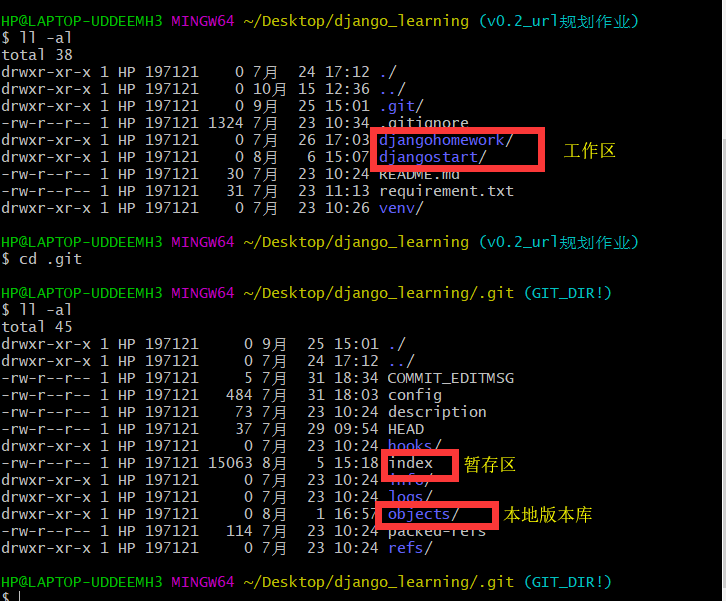
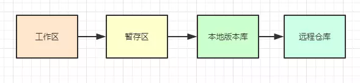
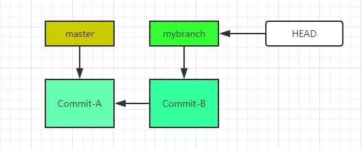
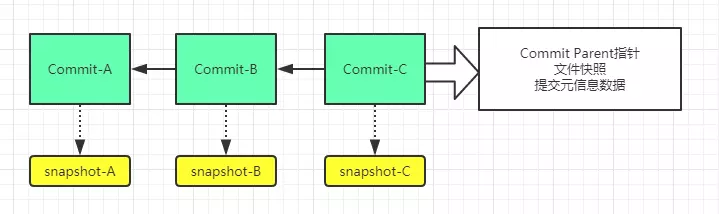
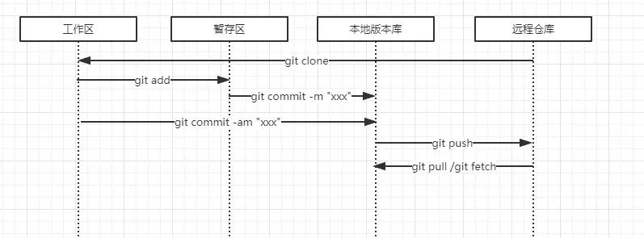

Git 入门
前言
Git: 版本控制领域 .已经发展了一段时间了，从古老的CVS，到SVN集中式管理，再到现在的GIT。
由于Git的分布式、everything is local、分支等诸多特性，让越来越多的项目开始从SVN迁移到Git进行管理。
Github && Git 中的一些重要概念
Repository
- 仓库，说白了，就是一个project
Star
- 我想你或多或少浏览过github上的开源项目，你可以star它们，可以理解为收藏的意思。在github上，拥有很多star，那是很牛的事情。
Fork
- 我们经常听说开源贡献，那么到底怎么去做呢？实际上，你可以fork一个开源项目，比如fork Spring，那么相当于你COPY了一份Spring到你的空间，就是一个独立的属于你的仓库，如果你发现了什么Bug，或者进行什么改进，都可以在你的仓库上进行。
Pull Request
- 上面说fork，可以进行开源贡献，但是注意的是fork了仓库后，你可以在自己的仓库上进行任何修改，但是如果你要把你的修改合并到开源项目仓库中的话，那么你就得发起一个Pull Request请求。一旦开源作者收到你的Pull Request并同意之后，那么你的代码将会同步到开源项目之中！
Watch
- Watch一个Repository，就相当于社交的关注一样，这个仓库有什么动态，你都会收到通知。
Issue
- 简单理解，就是一个代码上的问答、讨论而已。
Git的三大区域:工作区、暂存区、本地仓库


工作区
- 就是我们写代码工作的地方。
暂存区
- 如果工作区有改动，有些想提交版本，有些还不想提交，基于此，Git引入暂存区的概念，就是哪些需要提交到版本库，就先进入暂存区
本地仓库
- 暂存区的内容可以提交至本地版本库（local repository），这就是所谓的everything is local。本地版本库，可以和远程仓库（remote repository）交互，实现多人协作。
Git的分支思想
- git branch

commit对象

在实际开发中，我们的项目（仓库），一般有一个master分支，这个master分支的代码就是线上运行的代码。我们平时开发的话，那么先从master拉取最新的代码，并以此为基础新建一个本地开发分支，比如mybranch，然后，我们在mybranch上进行开发，然后把修改提交到mybranch的本地版本库。而这个修改，在Git中叫做commit对象。
既然，可以有mybranch分支，也可以有很多的其它分支，因此存在分支间的切换、合并。HEAD可以用来表示当前所处的分支。如上图所示，其实把mybranch的改动合并到master分支上，就相当于master的指针指向commit-B即可。这种合并，在Git中就是所谓的“快速合并”。（从这里你也能感受到，其实分支的合并、切换、销毁，是非常快速的，因为指针的缘故）
Git中的分支，其实本质上就是一个指向commit对象的指针，而且是可变的，每次提交，指针会自动向前移动。
Git在实际中的使用方式
Git有命令客户端Git Bash，也有图像客户端，如TortoiseGit，不过掌握Git的最佳方式依然是命令行
Git的必要设置
- $ git config –global user.name xxxxx
- $ git config –global user.mail xxxxxx@xx.com
1 | **为什么要设置用户名、邮箱呢？** |
git init && git clone
很多时候，我们开发项目，只需要先利用git clone把现有的仓库代码克隆复制到本地即可。git init一般是在本地创建一个受Git管理的项目，然后推送到Git服务器，相当于是创建仓库。
git命令运转

git status
1
2
3
4
5
6
7
8
9
10
11
12
13
14
15- **git branch**
- **git status/git status -s**
- 接下来，明确我们要在哪个分支上开发，从master创建分支开发？
- **git checkout -b newBranch （创建并切换）**
- 开发完毕后，我们要切换到master上，想把newBranch合并进来：
- **注意checkout切换分支的最佳方式是保持工作区域的干净，什么是干净呢？就是把变化的全部提交到newBranch本地版本库，否则git会提示阻止checkout。**
- **git checkout master**
- **git merge newBranch**
- 假设在newBranch分支上开发的中途，突然线上有问题，我们需要切换到master进行问题修复，而此时，我们不想提交到newBranch本地版本库，那么如何完成切换呢？
- 采用**stash**机制，说白了，就是在工作区可以先暂存状态，既不提交到本地版本库，又可以切换到其他分支上，待再次切换到newBranch后，可以**git apply**进行工作区的状态恢复。
- **如果合并出现冲突，怎么办？**
- **根据提示，一般采用人工解决。注意解决冲突后，再利用git add标志解决冲突即可。**
- **注意，Git的本地性，在进行合并操作（不论是合并本地分支、还是想要合并远程分支）时，一定切记，需要先在本地完成merge，解决冲突后，在git push推送到远程仓库上。**
- **如果Git合并没有冲突，是否就是一定没有问题？**
- **Git很智能，它能够根据commit的树形结构，智能的帮助我们分析出最佳合并的途径，但是合并没有问题，并不能说明合并后的代码一定是正确的，还是要对合并后的代码进行测试！**
Git常用命令总结
1 | **git clone <版本库的网址> 会在本地主机生成一个目录，与远程主机的版本库同名**** |